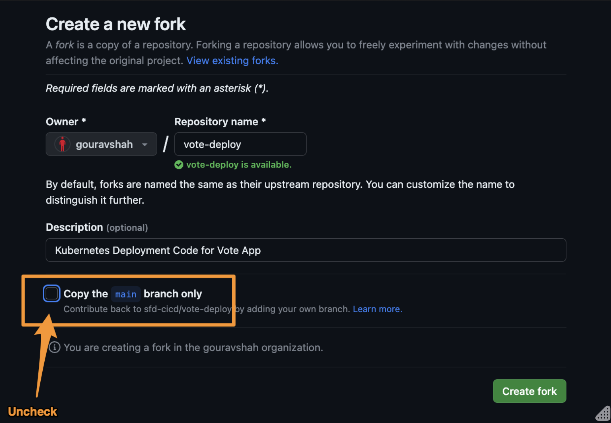
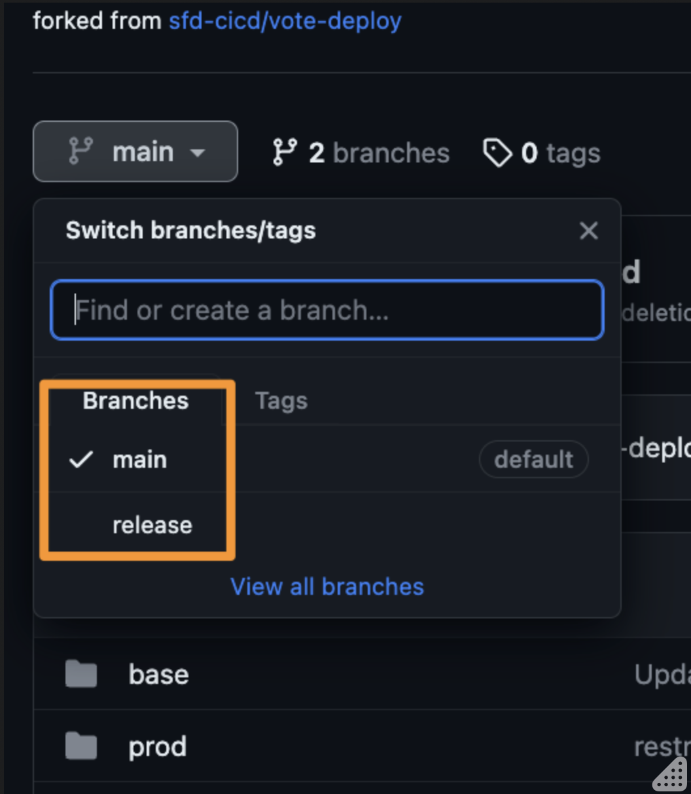
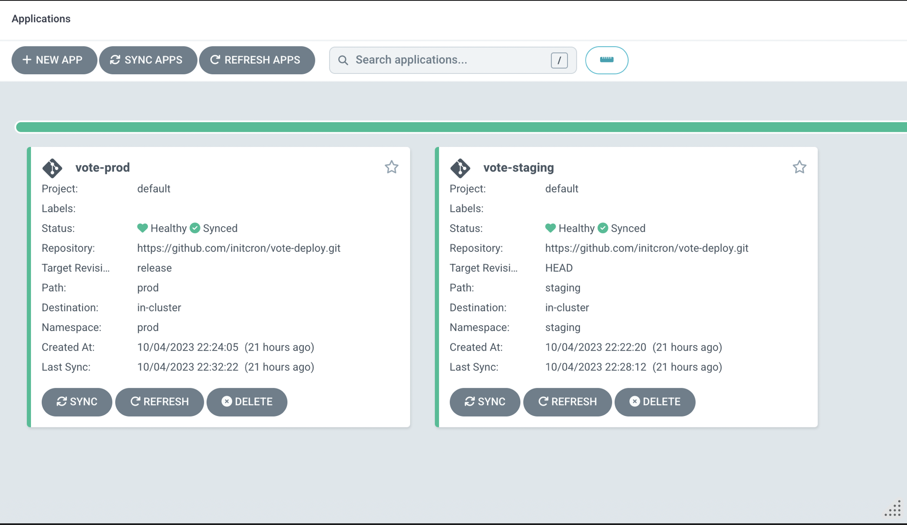

Lab 10A - Setting up Automated Deployments with ArgoCD
Author: Gourav Shah
Publisher: School of Devops
Version : v2023.10.06.01
Setup ArgoCD
Install ArgoCD
kubectl create namespace argocd
kubectl apply -n argocd -f https://raw.githubusercontent.com/argoproj/argo-cd/stable/manifests/install.yaml
Reset admin password to password
# bcrypt(password)=$2a$10$rRyBsGSHK6.uc8fntPwVIuLVHgsAhAX7TcdrqW/RADU0uh7CaChLa
kubectl -n argocd patch secret argocd-secret \
-p '{"stringData": {
"admin.password": "$2a$10$rRyBsGSHK6.uc8fntPwVIuLVHgsAhAX7TcdrqW/RADU0uh7CaChLa",
"admin.passwordMtime": "'$(date +%FT%T%Z)'"
}}'
Source: reset-argo-password.sh Reference: argo-cd/faq.md at master · argoproj/argo-cd · GitHub
kubectl get all -n argocd
kubectl patch svc argocd-server -n argocd --patch \
'{"spec": { "type": "NodePort", "ports": [ { "nodePort": 32100, "port": 443, "protocol": "TCP", "targetPort": 8080 } ] } }'
source: patch_argo_svc.sh
kubectl get svc -n argocd
Find out the IP address for one of the nodes. One way to do so is to run the following command,
kubectl get nodes -o wide
Note IP address for one of the nodes and browse to https://NODEIP:32100
where, replace NODEIP with the actual.
You should be presented with the login page for ArgoCD as follows

- username =.
admin - password =
password
Once logged in, you should see a screen such as the following screenshot

Setup Deployment Repository
- Create a fork of sfd-cicd/vote-deploy: Kubernetes Deployment Code for Vote App
While creating the fork, ensure that you uncheck the Copy the main branch only option as shown in screenshot below.

Ensure you have main and release branches available.

If you do not have the release branch, create it from main.
Review the code created with kustomization overlay configured for staging and prod environments in additional to the base manifests.
Setup Staging and Prod Deployments with ArgoCD
Create namespaces mapping staging and prod environments as,
kubectl create ns staging
kubectl create ns prod
kubectl get ns
Browse to ArgoCD web console and click on Create Application

From General ,
- Application Name :
vote-staging - Project : default
- Sync Policy :
Automatic - Prune Resources Checked

From Source,
- Repository URL :
Your Repo URL (https) - Revision : main
- Path :
staging

From Destination,
- Cluster URL : https://kubernetes.default.svc (default)
- Namespace :
default

Click on CREATE button on the top

Set up Deploy to Prod Configuration
Create another application, repeat the same configurations with the following changes,
- Cluster URL : https://kubernetes.default.svc (default)
- Application Name :
vote-prod - Revision :
release(will deploy from release branch) - Path :
prod - Namespace :
prod

Once created, you should see two applications configured on ArgoCD tracking two environments.
Deployments in Action
Open two terminals and start watching for changes in the staging namespace
Terminal 1
watch kubectl get all -n staging
Terminal 2
watch kubectl get all -n staging
Watch for the changes in the console as well as on Argo. You shall see the application synced from the Git Repo to the Kubernetes Cluster in a few seconds.
Staging

Prod

Validate by accessing the vote apps on
- Staging : http://NODEIP:30300
- Prod : http://NODEIP:30400
e.g.

Exercises
- Set up branch protection rule to lock down
releasebranch and allow changes via pull requests. You can experiment by adding additional policies as well. - Try modifying YAML manifests in Deploy Repo in Git in main branch by changing the image tag in
base/deployment.yamland wait for the staging deployment. Then raise the pull request to merge it into release and see it deployed to prod.
References
- Getting Started with Argo Getting Started - Argo CD - Declarative GitOps CD for Kubernetes
- Reset admin password argo-cd/faq.md at master · argoproj/argo-cd · GitHub